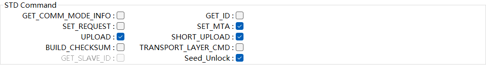

小满S32K148示例工程说明¶
基本信息¶
简介¶
本Demo工程集成的AUTOSAR协议栈有CAN通信、诊断、网络管理、存储、看门狗。各个模块均提供了参考的配置示例，旨在指导用户快速熟悉AUTOSAR中各个协议栈的模块的基本配置以及各个模块间的关联关系。
缩略词¶
缩写词 |
英文全称 |
中文解释 |
开发环境¶
编译器&IDE: S32 Design Studio 3.5
EB工具: EB tresos Studio 29.0.0
MCAL: SW32K1_S32M24x_RTD_R21-11_2.0.0_QLP1
开发板： S32K148EVB-Q176
开发环境获取¶
注册恩智浦账号后访问以下链接：https://www.nxp.com.cn/document/guide/getting-started-with-the-real-time-drivers-rtd:GS-AUTOMOTIVE-RTD?section=design-resources | NXP 半导体
获取EB工具：
{kind=link}
{kind=link}
{kind=link}

获取MCAL安装包和IDE补丁包：
{kind=link}
{kind=link}
{kind=link}
{kind=link}
IDE补丁包安装¶
S32 Design Studio 3.5安装好后还需要添加补丁。
{kind=link}
{kind=link}
{kind=link}
{kind=link}
{kind=link}

{kind=link}
BSW工程目录结构说明¶
AUTOSAR 基础软件集成工程的目录结构一般如下：
{kind=link}
各文件夹释义：
ASW：存放应用代码，供客户添加应用代码。
BSW：存放BSW相关代码，包括AUTOSAR各个协议栈源代码和配置、MCAL的源代码和配置、复杂驱动的源代码和配置等。

CommonInclude：存放共用的头文件，比如Std_Types.h、Compiler.h、ComStack_Types.h等。
Communication：存放通信相关的代码，包含Can、Lin、Ethernet、FlexRay等。

Config：存放BSW配置相关的代码，包含BSW的配置、MCAL的配置、CDD的配置等。

Crypto：存放加密模块相关的代码。
IoHwAb：存放IO抽象模块的源代码。
Libraries：存放CRC、E2E等通用库代码。
MCAL：存放MCAL各模块的源代码、CanTrcv、LinTrcv、EthPhy、CDD模块源代码。
{kind=link}
Memory：存放存储相关模块的源代码。
{kind=link}
SystemServices：存放系统服务相关模块的源代码。
{kind=link}
RTE：存放RTE代码。
LinkFile：存放链接文件。
协议栈配置说明¶
CAN通信协议栈¶
CAN通信协议栈概述¶
CAN通信协议栈涉及到的软件模块主要有CAN、CanIf、PduR、Com、ECUC模块，其中各个模块的主要功能如下表：
CAN通信栈各配置模块介绍
模 块名 |
功能 |
Can |
主要配置CAN控制器的波特率，CAN报文的收发邮箱。 |
CanIf |
CanIf 模块主要处理上层模块与底层驱动的之间P DU的传递，为上层模块提供统一的接口来管理不同的CAN硬件模块。 |
EcuC |
用于辅助 配置工具完成配置的模块。主要提供Pdu的定义，其它模块通过关联 EcuC中Pdu，相互关联起来。 |
PduR |
PDU Router主要为通讯接口模块（CANIF）、传输协议模块（CAN TP、J1939 TP）、诊断 通讯管理模块（DCM、J1939DCM）以及通讯模块（COM、LDCOM）以及 IPDUM、SECOC等模块提供基于 I-PDU的路由服务。 |
Com |
COM模块主要提供 I-PDU和信号相关管理功能 |
CAN通信协议栈配置功能说明¶
CAN通信协议栈配置的发送报文说明：
报文名 |
CANID* |
说明 |
CAN0_Tx_0x300_Cyclic |
0x300 |
周期报文，周期时间：500ms 该报文下的信号均配有UB位 |
CAN0_Tx_0x301_Event |
0x301 |
事件报文 |
CAN0_Tx_0x302_Mixed |
0x302 |
混合 报文，正常周期：500ms，触 发后连发3帧，周期为：50ms |
CAN0_Tx_0x303_Cyclic_Counter |
0x303 |
周期报文，周期时间 ：500ms，带RollingCounter |
CAN0_Tx_0x350_Cyclic_PN17 |
0x350 |
周期报文，周期时间：100ms 受PN17控制 |
CAN0_Tx_0x351_Cyclic_PN29 |
0x351 |
周期报文，周期时间：100ms 受PN29控制 |
CAN0_Tx_0x360_E2E_P01 |
0x360 |
周期报文，周期时间：100ms E2E报文，DATAID：0x1234 |
CAN通信协议栈配置的接收报文说明：
报文名 |
CANID* |
说明 |
CAN0_Rx_0x200_Cyclic |
0x200 |
周期报文，周期时间：500ms 该报文下的信号均配有UB位 |
CAN0_Rx_0x201_Event |
0x201 |
事件报文 |
CAN0_Rx_0x202_Mixed |
0x202 |
混合报文，正常周期：5 00ms，触发后连发3帧，周期为 ：50ms，包含信号超时2500ms |
C AN0_Rx_0x203_Cyclic_Counter |
0x203 |
周期报文，周期时 间：500ms，带RollingCounter |
CAN0_Rx_0x250_Cyclic_PN17 |
0x250 |
周期报文，周期时间：100ms 受PN17控制 |
CAN0_Rx_0x251_Cyclic_PN29 |
0x251 |
周期报文，周期时间：100ms 受PN29控制 |
CAN0_Rx_0x260_E2E_P01 |
0x260 |
周期报文，周期时间：100ms E2E报文，DATAID：0x1234 |
CAN网络管理协议栈¶
CAN网络管理协议栈概述¶
CAN通信协议栈涉及到的软件模块主要有Can、CanIf、CanSM、EcuC、NM、CanNm、ComM模块，其中各个模块的主要功能如下表：
网络管理栈各配置模块介绍
** 模块名** |
功能 |
Can |
主要配置CAN控制器的波特率，CAN报文的收发邮箱。 |
CanIf |
CanIf模块主要处理上层模块与底层驱动 的之间PDU的传递，为上层模块提供统一的接口来管理不同的CAN 硬件模块。 |
EcuC |
用于辅助配 置工具完成配置的模块。主要提供Pdu的定义，其它模块通过关联 EcuC中Pdu，相互关联起来。 |
Nm |
NmIf模块主要包 含两个功能：NmIf模块是ComM与CanNm之间的适配层；网络管理协 调功能，协调不同总线channel的ECU节点实现网络的同步睡眠。 |
ComM |
C omM模块封装了控制底层的通信服务。通信管理模块从通信请求者 那里收集总线通信访问请求，并协调这些请求，主要目的是：为 每个Channel设置一个状态机控制一个ECU的多个通信总线通道。 |
CanSM |
主要功能 是与通信硬件抽象层和系统服务层产生交互，为每一个CAN通信总 线定义一个总线相关的状态管理，并为相关的总线提供流控制。 |
CanNM |
负责实现EC U的状态切换。比如合适进入睡眠、是否保持正常的网络状态等。 |
CAN网络管理协议栈配置说明¶
CAN网络管理的接收报文ID范围为0x500-0x5ff,
CAN网络管理的发送报文ID为0x501
CanNM的主要配置参数如下表所示：
配置项 |
配置参数 |
CanNmGlobalPnSupport |
TRUE |
CanNmComUserDataSupport |
TRUE |
CanNmMainFunctionPeriod |
0.005 |
CanNmPassiveModeEnabled |
FALSE |
CanNmPnEiraCalcEnabled |
TRUE |
CanNmPnResetTime |
2.5S |
CanNmActiveWakeupBitEnabled |
TRUE |
CanNmCarWakeUpRxEnabled |
FALSE |
CanNmImmediateNmCycleTime |
0.02S |
CanNmImmediateNmTransmissions |
10 |
CanNmMsgCycleOffset |
0.0 |
CanNmMsgCycleTime |
1.0S |
CanNmMsgTimeoutTime |
0.001S |
CanNmNodeId |
1 |
CanNmPduCbvPosition |
CANNM_PDU_BYTE_1 |
CanNmPduNidPosition |
CANNM_PDU_BYTE_0 |
CanNmPnEnabled |
TRUE |
Ca nNmPnHandleMultipleNetworkRequests |
FALSE |
CanNmRepeatMessageTime |
3S |
CanNmRetryFirstMessageRequest |
FALSE |
CanNmTimeoutTime |
3.0S |
CanNmWaitBusSleepTime |
1.5S |
CanSMBorCounterL1ToL2 |
10 |
CanSMBorTimeL1 |
0.1S |
CanSMBorTimeL2 |
1.0S |
CanSMBorTimeTxEnsured |
FALSE |
CanSMEnableBusOffDelay |
FALSE |
CAN网络管理协议栈休眠唤醒说明¶
设置唤醒源主要包含两个为远程唤醒和本地唤醒
唤醒源 |
说明 |
EcuMWakeupSource_CAN |
被动唤 醒，需要检测总线上是否为网管报文 |
EcuMWakeupSource_Local |
主动 唤醒，用户请求后就会立即请求网络 |
在S32K148开发板上，ECU一上电主动请求网络，释放网络后ECU休眠时直接调用Mcu_PerformReset进行复位。
CAN诊断协议栈¶
CAN诊断协议栈概述¶
CAN诊断协议栈涉及到的软件模块主要有Can、CanIf、CanTP、EcuC、DCM、DEM模块，其中各个模块的主要功能如下表：
诊断栈各配置模块介绍
模块名 |
功能 |
Can |
主要配置CAN控制器的波特率，CAN报文的收发邮箱。 |
CanIf |
CanIf模块主 要处理上层模块与底层驱动的之间PDU的传递，为上 层模块提供统一的接口来管理不同的CAN硬件模块。 |
EcuC |
用 于辅助配置工具完成配置的模块。主要提供Pdu的定 义，其它模块通过关联EcuC中Pdu，相互关联起来。 |
PduR |
PDU Router 主要为通讯接口模块（CANIF）、传输协议模块（CAN TP、J1939 TP）、诊断通讯管理模块 （DCM、J1939DCM）以及通讯模块（COM、LDCOM）以 及IPDUM、SECOC等模块提供基于I-PDU的路由服务。 |
CanTp |
CANTP模块实现依据ISO15765-2 标准规范中 定义的CAN总线数据在传输层的数据接收发送功能。 |
Dcm |
依据ISO15765-3和ISO14229-1标准描述，实现诊 断请求报文的解析，响应(正响应和负响应)与执行。 |
Dem |
实现诊断故障的存储与管理功能，提供API接口供 其他模块读取DTC和对应的冻结帧数据和扩展数据。 |
CAN诊断协议栈配置说明¶
CAN诊断协议栈的CANID如下表：
CANID类型 |
CANID |
物理寻址Physical Request CAN ID |
0x708 |
功能寻址Functional Request CAN ID |
0x7DF |
物理响应Physical Response CAN ID |
0x709 |
Demo工程中配置的诊断服务有如下表所示：
{kind=link}
A pp li ca ti on L ay er Ti mi ng Pa ra me te rs * ** 应 用 层 会 话 管 理 计 时 器 参 数 ** |
||||
Symbol 符号 |
Min 最小值 |
M ax/Timeout 最大值 /超时时间 |
U nit 单 位 |
|
E CU 电 控 单 元 * |
P2Server |
N/A |
50 |
ms |
P 2*Server |
N/A |
5000 |
ms |
|
S3Server |
N/A |
5000 |
ms |
|
N et wo rk L ay er Ti mi ng Pa ra me te rs * ** 网 络 层 定 时 器 参 数 ** |
||||
Symbol 符号 |
Timeout 超时时间 |
Performance R equirement* 性能要求 |
U nit 单 位 |
|
E CU 电 控 单 元 * |
N_As/N_Ar |
70 |
—— |
ms |
N_Bs |
150 |
—— |
ms |
|
N_Br |
—— |
< 70 |
ms |
|
N_Cs |
—— |
< 150 |
ms |
|
N_Cr |
150 |
—— |
ms |
|
O th er pa ra me te rs * ** 其 它 参 数 ** |
||||
Symbol 符号 |
Parameter 参数 |
Value 值 |
U nit 单 位 |
|
E CU 电 控 单 元 * |
BS |
Block Size |
0 |
—— |
STmin |
Minimum Separation Time |
10 |
ms |
|
Fill b ytes(发送数据填充) |
Padding |
0xAA |
—— |
|
接收填充值检查 |
ON/OFF |
OFF |
—— |
|
Fill b ytes(接收数据填充) |
Padding |
—— |
—— |
|
诊断报文长度 |
Byze Size |
8 |
—— |
|
诊断报文长度检查 |
ON/OFF |
ON |
—— |
|
D CM接收BUFFER最大值 |
Byze Size |
1024 |
—— |
|
D CM发送BUFFER最大值 |
Byze Size |
1024 |
—— |
|
TP半双工 |
CAN诊断时间参数如下:
安全访问算法配置信息如下：
Mask配置值
Mask = 0x5555AAAAu |
密钥算法（根据Seed计算Key）如下，其中seed为输入的种子。
安全算法
Key = Seed & Mask |
注：最大失败次数为3，达到最大失败次数启动延时时间为10S；连续请求种子错误计数不加1，种子相同，延时时间过后错误计数清零。
DID列表：
{kind=link}
IO DID列表：

{kind=link}
{kind=link}
注：DTC格式：01，ISO 14229；DTC status支持的bit位仅bit7不支持，0x7F；
DTC扩展数据：
DTC快照：
{kind=link}
{kind=link}
存储协议栈¶
存储协议栈概述¶
存储协议栈涉及到的软件模块主要有Flash、MemAcc、FEE、NvM模块，其中各个模块的主要功能如下表：
NvM 各配置模块介绍
** 模块名** |
功能 |
Flash |
Flash 驱动配置 |
MemAcc |
MemAcc 驱动配置 |
FEE |
FEE 驱动配置 |
NvM |
非易失存储管理 |
存储协议栈配置说明¶
存储协议栈中主要配置了如下NvMBlock:
NvMBlock名 |
作用 |
NvMBlock_ConfigID |
NvM管理 |
NvMBlock_Dem_Data |
用来存放Dem的数据 |
NvMBlock_Dem_Status |
用来存放Dem的状态 |
NvMBlock_Dcm |
用来存放Dcm的数据（暂未使用） |
NvMBlock_SecurityLevel01 |
用来 存放安全等级1错误计数（暂未使用） |
NvMBlock_SecurityLevel02 |
用来 存放安全等级2错误计数（暂未使用） |
NvMBlock_Did_0xF190 |
用来存放DID 0xF190的数据 |
NvMBlock_Did_0xF183 |
用来存放DID 0xF183的数据 |
看门狗协议栈¶
看门狗协议栈概述¶
看门狗协议栈是一种用于监控和保护系统运行状态的机制。它通过监控软件执行的稳定性和正确性确保了在系统发生故障时能迅速采取恢复措施。
Wdg协议栈主要涉及到的模块为Wdg、WdgIf 、WdgM ，其中各个模块的主要功能如下表：
Wdg 看门狗协议栈各配置模块介绍
模块 名* |
功能 |
Wdg |
Wdg 属于 MCAL的一部分，用于完成看门狗初始化，模式设置以及喂狗设置等。 |
WdgIf |
WdgIf 模块属于ECU抽象层，能够允许上层WdgM 模块来同时处理多个看门狗实体，比如外部看门狗或者内部看门狗。 |
WdgM |
WdgM 模块 从硬件看门狗实体监控的过程抽象出来完成软件程序执行监控抽象。 |
看门狗协议栈配置说明¶
看门狗协议栈中配置了一个Alive supervision用于监控定期软件的时间。
监控 类型 |
描述 |
监 控 实 体 个 数 * |
监 控 点 个 数 * |
参 考 周 期 * |
监 控 失 败 门 限 * |
监 控 失 效 门 限 * |
期 望 执 行 次 数 * |
次 数 上 偏 差 * |
次 数 下 偏 差 * |
Alive 监控 |
监控一 次mainfu nction周 期alive 监控点执 行的次数 |
1 |
1 |
1 |
0 |
0 |
1 |
0 |
0 |
OS协议栈¶
OS协议栈概述¶
AUTOSAR OS主要负责任务管理和中断管理功能；实现包括以下模块:Task、Isr、Countor、Alarm、ScheduleTable、Event、Resource等。
OS协议栈配置说明¶
OsTask配置
Name |
Priority* |
Stack Siz e[4Bytes] |
Preemptive Poilcy* |
OsTask Autostart |
OsTask_Init |
1 |
512 |
NON |
True |
OsTask_1ms |
4 |
512 |
FULL |
False |
OsTask_5ms |
3 |
512 |
FULL |
False |
OsTask_10ms |
2 |
512 |
FULL |
False |
O sTask_100ms |
1 |
512 |
FULL |
False |
OsIsr配置
Name |
** Category** |
Stack Siz e[4Bytes] |
** Priority** |
Nested Enable |
CAN0_ORed |
GATEGORY_2 |
512 |
NON |
False |
CAN 0_ORed_0_15_MB |
GATEGORY_2 |
512 |
FULL |
False |
CAN0 _ORed_16_31_MB |
GATEGORY_2 |
512 |
FULL |
False |
FTM0_Ch0_Ch1 |
GATEGORY_2 |
512 |
FULL |
False |
OsAlarm配置
Name |
Activate Task |
OsAlarm Autostart |
Start Time |
Cycle Time |
OsAlarm_1ms |
OsTask_1ms |
True |
1 |
1 |
OsAlarm_5ms |
OsTask_5ms |
True |
5 |
5 |
OsAlarm_10ms |
O sTask_10ms |
True |
10 |
10 |
OsAlarm_100ms |
Os Task_100ms |
True |
100 |
100 |
工程验证¶
编译及下载¶
将BSW工程导入IDE后点击Build Project即可编译工程。
{kind=link}
编译通过后点击Debug下载工程。（根据使用的调试器配置）
{kind=link}
工程运行验证¶
正确连接开发板并成功下载运行后，使用通信测试验证工具接收板子发出的报文，可以收到如下报文。
{kind=link}